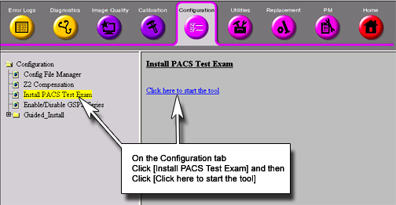
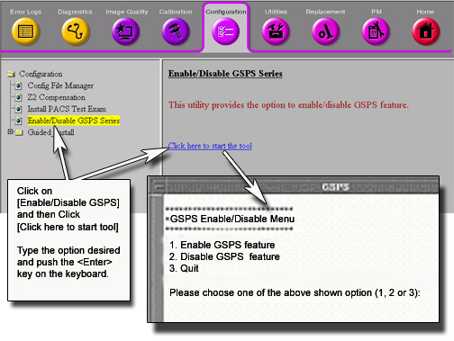

Operating Documentation
Direction 5440000, Rev# 5
Signa HDxt Service Methods
Module Version 2.0, Version Date 6/18/09
Operating Documentation |
| Required Persons | Preliminary Reqs | Procedure | Finalization |
|---|---|---|---|
| 1 | Not Applicable | 30 mins | Not Applicable |
The following procedure should be run at system installation to verify there are no DICOM Connectivity issues from the HDx system to the site PACS systems. A service key must be present to proceed.
Go to the Service Desktop and start the MR Service Browser if it is not already running.
Click on [Configuration].
Under Configuration, select [Install PACS Test Exam]. Select [Click here to start the tool]. See Illustration 1.
Illustration 1: Installation of PACS Test Exam

On the Image Browser Desktop, the PACS test images appear. See Illustration 2.
Illustration 2: Image Browser

These series offer a cross section of new features and DICOM types in the 14.0 release. A single exam will be installed into the database and can be viewed in the Browser. This exam consists of several series:
Series 1: 3 Plane Localizer: 1 image.
Series 3: T2 Flair Propeller: 1 image.
Series 4: 3D COSMIC: 1 image.
Series 5: TEA-PRESS Spectroscopy: 1 image
Series 7: Prose: 1 image.
Series 10: LAVA: 1 image.
Series 12: MR Echo “FIESTA”: 1 image.
Series 98: Text Page Screesave: 1 image.
Series 100: Functool Color SSAVE: 1 image
Series 101: Prose Structured Report: 1 image.
Series 600: DW Propeller ADC: 1 image.
Series 601: DW Propeller eADC: 1 image.
Series 1000: IVI Color SSAVE of series 10 (LAVA): 1 image.
Series 1001: IVI RFMT of series 10 (LAVA): 1 image.
Series 1251: MR Echo Bookmark: 1 image.
Series 5005: Single Voxel MRS Localizer Screensave: 1 image.
Series 10012: GSPS of series 12
Try networking this exam to PACS system. If this entire exam networks without errors to a PACS system, there is little chance of future DICOM connectivity issues with this PACS.
If test is successful, remove the PACS images by Selecting the proper study. Then select [Remove] from the Browser top menu, then select [Remove Examination], then select [OK]. The images can be loaded back on the system at any time.
Configure the PACS DICOM network properties on the HDx system and select it as the current networking device.
Select the PACS Test Exam in the Image Browser. See Illustration 2.
Select [Network] then [By Exam].
If the exam transfers without errors, you’re done testing this PACS device. Repeat for any additional PACS devices at the site.
If the exam transfer yields an error, continue to Step .
Select a series in the series listing window. Select Network->[By Series].
Go through each series in this manner and record the series which are failing.
If series 1, 3, 4, 5, 7, 10, 12, 98, 600, 601, 1001, 1251, or 5005 fail, contact the On-Line center for further assistance. These are standard image types and a failure suggests a problem.
If series 100 or 1000 fails, check if the PACS system supports Color Screensave image types. The site may need to avoid creating Color Screensaves with Post Processing tools if the PACS system does not support them.
If series 101 fails, the PACS system likely does not support Structured Report DICOM Objects. Consult the PACS DICOM Conformance Statement. If the PACS does not support Structured Reports, advise the site to avoid Generating Reports in Functool.
If series 10012 fails, the PACS system likely does not support Grey scale Soft copy Presentation State (GSPS) DICOM Objects. Consult the PACS DICOM Conformance Statement. If the PACS does not support GSPS, the site can disable the creation of GSPS Objects through Guided Install. If the GSPS feature is turned off, the site can use the old “Save State” (ss in the command window) and the system will not create GSPS series. Please see Step .
The PACS Test Exam can also be used to verify that the site has the correct Annotation Patches loaded on their AW Workstations. For the HDx release, annotation patches exist for the following AW platforms: AW4.0, AW4.1, AW4.2, and AW4.3.
Configure the AW Workstation DICOM network properties on the HDx system. Select the AW as the current networking device.
Select the PACS Test Exam in the Browser.
Select [Network] then [By Exam].
If the exam transfer yields an error, troubleshoot with the above procedure.
Otherwise, go to the AW system and view the image annotation on the following images. If annotation is missing, this will indicate that Annotation Patches need to be loaded.
View the image in series 600. If the PSD name is annotated as “FSE/Prop”, this verifies that the AW has the latest HDx 14.0 Annotation patch loaded. If the “Prop” is missing, the latest MR 11.0 Annotation patch needs to be loaded on the AW system.
View the image in series 10. If the PSD name is annotated as “M3D/LAVA/..”, this verifies that the AW has the latest MR 14.0 Annotation patch loaded. The “LAVA” text is the key. The number annotated after “LAVA” is not important (it’s the flip angle). If the “LAVA” is missing, the latest HDx 14.0 Annotation patch needs to be loaded on the AW system.
View the images in series 4. If the PSD name is annotated as "M3D/COSMIC/..", this verifies that the AW has the latest HDx 14.0 annotation patch loaded. The "COSMIC" text is the key. The number annotated after "COSMIC" is not important (it's the flip angle). If the "COSMIC" is missing, the latest HDx 14.0 annotation patch needs to be loaded on the AW system.
Using the PACS Test Exam, which includes real human anatomy, it is possible to quickly check PACS Window Level and Window Width processing. By following the following steps, it is possible to verify that the PACS system is properly receiving the HDx Window Width/Window Level values stored in the DICOM image header.
On the HDx scanner, open the image in series 4 in the Viewer. Note the “WW/WL” values annotated in the lower right hand corner of the image:
W = ________________ L = ___________________
On the HDx scanner, open the image in series 600 in the Viewer. Note the “WW/WL” values annotated in the lower right hand corner of the image:
W = ________________ L = ___________________
Move over to the PACS system and view the above images on the PACS system. Verify that the PACS system is using the above Window Width and Window Level settings. Note that the site PACS Administrator may need to disable some automatic preset values for this test. The goal is to verify that “by default” the correct values are being interpreted from the HDx DICOM image header.
It is also possible to verify connectivity to site Filming devices by using the PACS Test Exam. Images from this test exam or the “SMPTE” pattern exam should be used to verify filming connectivity.
Invoke the MR Service desktop tool.
Click the [Configuration] tab, then select [Enable/Disable GSPS Series] item. Select [Click here to start this tool]. See Illustration 3.
Illustration 3: GSPS Enable/Disable Tool

| NOTE: | By default, the mode is set to “Enable”. |
To disable the creation of GSPS series, select [Disable GSPS] feature.
Quit the tool and reboot the system.
From this point on, when “ss” is entered in the Viewer Command Window, the legacy Save State feature executes and the GSPS series is not created.
The creation of GSPS series can be turned back on by selecting Enable GSPS feature in the Service Browser at any time.
No finalization steps.